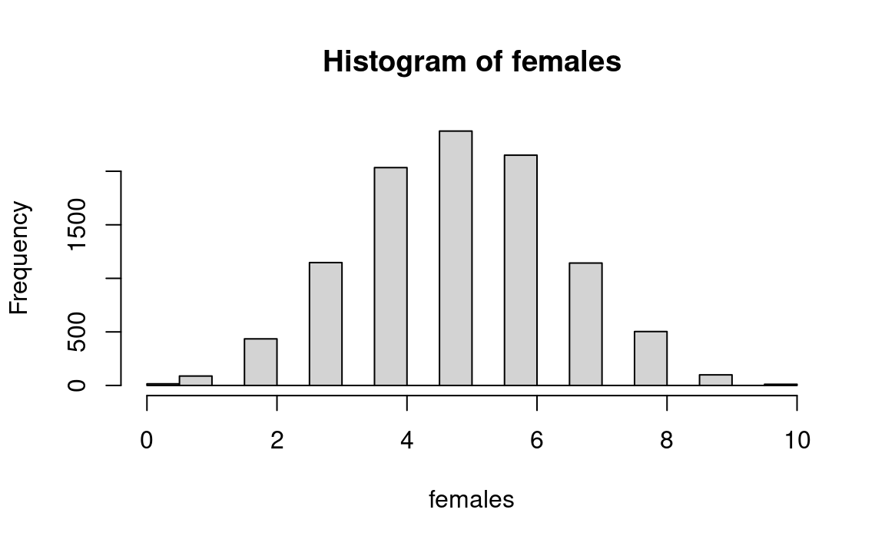

The previous chapters have presented procedures for making statistical inferences that apply to both testing hypotheses and constructing confidence intervals: This chapter focuses on specific procedures for testing hypotheses.
`The general idea in testing hypotheses is to ask: Is there some other universe which might well have produced the observed sample? So we consider alternative hypotheses. This is a straightforward exercise in probability, asking about behavior of one or more universes. The choice of another universe(s) to examine depends upon purposes and other considerations.
25.2 Canonical question-and-answer procedure for testing hypotheses
25.3 Skeleton procedure for testing hypotheses
Akin to skeleton procedure for questions in probability and confidence intervals shown elsewhere
The following series of questions will be repeated below in the context of a specific inference.
What is the question? What is the purpose to be served by answering the question?
Is this a “probability” or a “statistics” question?
Assuming the Question is a Statistical Inference Question
What is the form of the statistics question?
Hypothesis test, or confidence interval, or other inference? One must first decide whether the conceptual-scientific question is of the form a) a test about the probability that some sample is likely to happen by chance rather than being very surprising (a test of a hypothesis), or b) a question about the accuracy of the estimate of a parameter of the population based upon sample evidence (a confidence interval):
Assuming the Question Concerns Testing Hypotheses
Will you state the costs and benefits of various outcomes, perhaps in the form of a “loss function”? If “yes,” what are they?
How many samples of data have been observed?
One, two, more than two?
What is the description of the observed sample(s)?
Raw data?
Which characteristic(s) (parameters) of the population are of interest to you?
What are the statistics of the sample(s) that refer to this (these) characteristics(s) in which you are interested?
What comparison(s) to make?
Samples to each other?
Sample to particular universe(s)? If so, which?
What is the benchmark (null) universe?
This may include presenting the raw data and/or such summary statistics as the computed mean, median, standard deviation, range, interquartile range, other:
If there is to be a Neyman-Pearson-type alternative universe, what is it? (In most cases the answer to this technical question is “no.”)
Which symbols for the observed entities?
Discrete or continuous?
What values or ranges of values?
Which sample(s) do you wish to compare to which, or to the null universe (and perhaps to the alternative universe)? (Answer: samples the same size as has been observed)
[Here one may continue with the conventional method, using perhaps a t or f or chi-square test or whatever: Everything up to now is the same whether continuing with resampling or with standard parametric test.]
What procedure will be used to produce the resampled entities?
Randomly drawn?
Simple (single step) or complex (multiple “if” drawings)?
What procedure to produce resample?
Which universe will you draw them from? With or without replacement?
What size resamples? Number of resample trials?
What to record as outcome of each resample trial?
Mean, median, or whatever of resample?
Classifying the outcomes
What is the criterion of significance to be used in evaluating the results of the test?
Stating the distribution of results
Graph of each statistic recorded — occurrences for each value.
Count the outcomes that exceed criterion and divide by number of trials.
25.4 An example: can the bio-engineer increase the female calf rate?
The question. (from (Hodges Jr and Lehmann 1970, 310): Female calves are more valuable than male calves. A bio-engineer claims to have a method that can produce more females. He tests the procedure on ten of your pregnant cows, and the result is nine females. Should you believe that his method has some effect? That is, what is the probability of a result this surprising occurring by chance?
The purpose: Female calves are more valuable than male.
Inference? Yes.
Test of hypothesis? Yes.
Will you state the costs and benefits of various outcomes (or a loss function)? We need only say that the benefits of a method that works are very large, and if the results are promising, it is worth gathering more data to confirm results.
How many samples of data are part of the significance test? One
What is the size of the first sample about which you wish to make significance statements? Ten.
What comparison(s) to make? Compare sample to benchmark universe.
What is the benchmark universe that embodies the null hypothesis? 50-50 female, or 100/206 female.
If there is to be a Neyman-Pearson alternative universe , what is it? None.
Which symbols for the observed entities? Balls in bucket, or numbers.
What values or ranges of values? 0-1, (1-100), or 101-206.
Finite or infinite? Infinite.
Which sample(s) do you wish to compare to which, or to the null universe (and perhaps to the alternative universe)? Ten calves compared to universe.
What procedure to produce entities? Sampling with replacement,
Simple (single step) or complex (multiple “if” drawings)? One can think of it either way.
What to record as outcome of each resample trial? The proportion (or number) of females.
What is the criterion to be used in the test? The probability that in a sample of ten calves, nine (or more) females would be drawn by chance from the benchmark universe of half females. (Or frame in terms of a significance level.)
“One-tail” or “two-tail” test? One tail, because the farmer is only interested in females: Finding a large proportion of males would not be of interest, and would not cause one to reject the null hypothesis.
Computation of the probability sought. The actual computation of probability may be done with several formulaic or sample-space methods, and with several resampling methods: I will first show a resampling method and then several conventional methods. The following material, which allows one to compare resampling and conventional methods, is more germane to the earlier explication of resampling taken altogether in earlier chapters than it is to the theory of hypothesis tests discussed in this chapter, but it is more expedient to present it here.
25.5 Computation of Probabilities with Resampling
We can do the problem by hand as follows:
Constitute a bucket with either one blue and one pink ball, or 106 blue and 100 pink balls.
Draw ten balls with replacement, count pinks, and record.
Repeat step (2) say 400 times.
Calculate proportion of results with 9 or 10 pinks.
Or, we can take advantage of the speed and efficiency of the computer as follows:
n <-10000females <-numeric(n)for (i in1:n) { samp <-sample(c('female', 'male'), size=10, replace=TRUE) females[i] <-sum(samp =='female')}hist(females)k <-sum(females >=9)kk <- k / nmessage('Proportion with >= 9 females: ', kk)
Proportion with >= 9 females: 0.011

This outcome implies that there is roughly a one percent chance that one would observe 9 or 10 female births in a single sample of 10 calves if the probability of a female on each birth is .5. This outcome should help the decision-maker decide about the plausibility of the bio-engineer’s claim to be able to increase the probability of female calves being born.
25.6 Conventional methods
25.6.1 The Sample Space and First Principles
Assume for a moment that our problem is a smaller one and therefore much easier — the probability of getting two females in two calves if the probability of a female is .5. One could then map out what mathematicians call the “sample space,” a technique that (in its simplest form) assigns to each outcome a single point, and find the proportion of points that correspond to a “success.” We list all four possible combinations — FF, FM, MF, MM. Now we look at the ratio of the number of combinations that have 2 females to the total, which is 1/4. We may then interpret this probability.
We might also use this method for (say) five female calves in a row. We can make a list of possibilities such as FFFFF, MFFFF, MMFFF, MMMFFF … MFMFM … MMMMM. There will be 2*2*2*2*2 = 32 possibilities, and 64 and 128 possibilities for six and seven calves respectively. But when we get as high as ten calves, this method would become very troublesome.
25.6.2 Sample Space Calculations
For two females in a row, we could use the well known, and very simple, multiplication rule; we could do so even for ten females in a row. But calculating the probability of nine females in ten is a bit more complex.
25.6.3 Pascal’s Triangle
One can use Pascal’s Triangle to obtain binomial coefficients for p = .5 and a sample size of 10, focusing on those for 9 or 10 successes. Then calculate the proportion of the total cases with 9 or 10 “successes” in one direction, to find the proportion of cases that pass beyond the criterion of 9 females. The method of Pascal’s Triangle requires more complete understanding of the probabilistic system than does the resampling simulation described above because Pascal’s Triangle requires that one understand the entire structure; simulation requires only that you follow the rules of the model.
25.6.4 The Quincunx
The quincunx — a device that filters tiny balls through a set of bumper points not unlike a pinball machine, mentioned here simply for completeness — is more a simulation method than theoretical, but it may be considered “conventional.” Hence, it is included here.
25.6.5 Table of Binomial Coefficients
Pascal’s Triangle becomes cumbersome or impractical with large numbers — say, 17 females of 20 births — or with probabilities other than .5. One might produce the binomial coefficients by algebraic multiplication, but that, too, becomes tedious even with small sample sizes. One can also use the pre-computed table of binomial coefficients found in any standard text. But the probabilities for n = 10 and 9 or 10 females are too small to be shown.
25.6.6 Binomial Formula
For larger sample sizes, one can use the binomial formula. The binomial formula gives no deeper understanding of the statistical structure than does the Triangle (but it does yield a deeper understanding of the pure mathematics). With very large numbers, even the binomial formula is cumbersome.
25.6.7 The Normal Approximation
When the sample size becomes too large for any of the above methods, one can then use the Normal approximation, which yields results close to the binomial (as seen very nicely in the output of the quincunx). But use of the Normal distribution requires an estimate of the standard deviation, which can be derived either by formula or by resampling. (See a more extended parallel discussion in Chapter 27 on confidence intervals for the Bush-Dukakis comparison.)
The desired probability can be obtained from the Z formula and a standard table of the Normal distribution found in every elementary text.
The Z table can be made less mysterious if we generate it with simulation, or with graph paper or Archimedes’ method, using as raw material (say) five “continuous” (that is, non-binomial) distributions, many of which are skewed: 1) Draw samples of (say) 50 or 100. 2) Plot the means to see that the Normal shape is the outcome. Then 3) standardize with the standard deviation by marking the standard deviations onto the histograms.
The aim of the above exercise and the heart of the conventional parametric method is to compare the sample result — the mean — to a standardized plot of the means of samples drawn from the universe of interest to see how likely it is that that universe produces means deviating as much from the universe mean as does our observed sample mean. The steps are:
Establish the Normal shape — from the exercise above, or from the quincunx or Pascal’s Triangle or the binomial formula or the formula for the Normal approximation or some other device.
Standardize that shape in standard deviations.
Compute the Z score for the sample mean — that is, its deviation from the universe mean in standard deviations.
Examine the Normal (or really, tables computed from graph paper, etc.) to find the probability of a mean deviating that far by chance.
This is the canon of the procedure for most parametric work in statistics. (For some small samples, accuracy is improved with an adjustment.)
In the example of the ten calves, the choice of a benchmark universe — a universe that (on average) produces equal proportions of males and females — seems rather straightforward and even automatic, requiring no difficult judgments. But in other cases the process requires more judgments.
Let’s consider another case where the choice of a benchmark universe requires no difficult judgments. Assume the U.S. Department of Labor’s Bureau of Labor Statistics (BLS) takes a very large sample — say, 20,000 persons — and finds a 10 percent unemployment rate. At some later time another but smaller sample is drawn — 2,000 persons — showing an 11 percent unemployment rate. Should BLS conclude that unemployment has risen, or is there a large chance that the difference between 10 percent and 11 percent is due to sample variability? In this case, it makes rather obvious sense to ask how often a sample of 2,000 drawn from a universe of 10 percent unemployment (ignoring the variability in the larger sample) will be as different as 11 percent due solely to sample variability? This problem differs from that of the calves only in the proportions and the sizes of the samples.
Let’s change the facts and assume that a very large sample had not been drawn and only a sample of 2,000 had been taken, indicating 11 percent unemployment. A policy-maker asks the probability that unemployment is above ten percent. It would still seem rather straightforward to ask how often a universe of 10 percent unemployment would produce a sample of 2000 with a proportion of 11 percent unemployed.
Still another problem where the choice of benchmark hypothesis is relatively straightforward: Say that BLS takes two samples of 2000 persons a month apart, and asks whether there is a difference in the results. Pooling the two samples and examining how often two samples drawn from the pooled universe would be as different as observed seems obvious.
One of the reasons that the above cases — especially the two-sample case — seem so clear-cut is that the variance of the benchmark hypothesis is not an issue, being implied by the fact that the samples deal with proportions. If the data were continuous, however, this issue would quickly arise. Consider, for example, that the BLS might take the same sorts of samples and ask unemployed persons the lengths of time they had been unemployed. Comparing a small sample to a very large one would be easy to decide about. And even comparing two small samples might be straightforward — simply pooling them as is.
But what about if you have a sample of 2,000 with data on lengths of unemployment spells with a mean of 30 days, and you are asked the probability that it comes from a universe with a mean of 25 days? Now there arises the question about the amount of variability to assume for that benchmark universe. Should it be the variability observed in the sample? That is probably an overestimate, because a universe with a smaller mean would probably have a smaller variance, too. So some judgment is required; there cannot be an automatic “objective” process here, whether one proceeds with the conventional or the resampling method.
The example of the comparison of liquor retailing systems in Section 24.0.2 provides more material on this subject.
25.8 Why is statistics — and hypothesis testing — so difficult?
Why is statistics such a difficult subject? The aforegoing procedural outline provides a window to the explanation. Hypothesis testing — as is also true of the construction of confidence intervals (but unlike simple probability problems) — involves a very long chain of reasoning, perhaps longer than in any other realm of systematic thinking. Furthermore, many decisions in the process require judgment that goes beyond technical analysis. All this emerges as one proceeds through the skeleton procedure above with any specific example.
(Bayes’ rule also is very difficult intuitively, but that probably is a result of the twists and turns required in all complex problems in conditional probability. Decision-tree analysis is counter-intuitive, too, probably because it starts at the end instead of the beginning of the story, as we are usually accustomed to doing.)